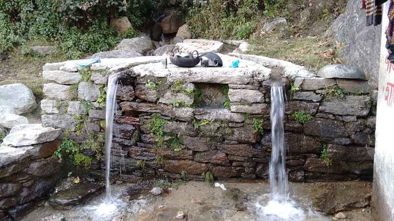

Legislation to check over-exploitation of groundwater in the final stages of drafting in Gujarat
Read more

Jaldhara
Re-imagining Working at Scale: Co-creating a Societal Platform for Water
Estimates suggest that India will fully utilize its water resources by 2050. The largest consumer of groundwater is agriculture which forms the mainstay of livelihood for almost half the country (49% as of 2011-12) especially in the decades following the green revolution. Groundwater contributes 62.4% of water used for irrigation & close to 90% of rural drinking water supply. This dependence on groundwater is only bound to increase as we adopt ambitious irrigation and drinking water supply targets. It is thus no surprise that we are the largest abstractors of groundwater in the world – with extraction exceeding the combined withdrawals of USA and China.
Large-scale societal challenges call for a new way of thinking that enables rapid sustainable development. An approach that creates a shared infrastructure that lets every actor in the society to participate in social innovation.
Societal Platforms are one of many ways forward to resolve complex societal challenges. They are imagined as a public good aimed at extending citizen services across our demographics and facilitating meaningful collaboration, amplified by technology.
Societal Platforms are built on elegant yet light digital infrastructure; they create spaces for co-creation and participation by all entities with a stake in positive change – from state institutions and entrepreneurs to non-profits or individual citizens. Developed with the right design principles and methods, Societal Platforms present a significant opportunity to reimagine societal transformation. The aim is to answer, for a specific mission: How might we design and develop Societal Platforms, as public goods, that enable open innovation for societal development? How can such a societal infrastructure amplify the benefits of societal initiatives across all segments of our society? How can a digital infrastructure support rapid evolution and adoption of innovations in multiple sectors such as education, healthcare, and financial inclusion? How can Societal Platforms help the network of societal actors move from their existing equilibrium to the desired one?
News feed from Indiawaterportal
Storage levels drop by three percent in major reservoirs across the southern states in a fortnight
Read more
Over 29 percent of India's total geographical area is comprised of degraded lands
Read more
Bauxite mining and rampant construction in watershed among top reasons for the Narmada drying up
Read more